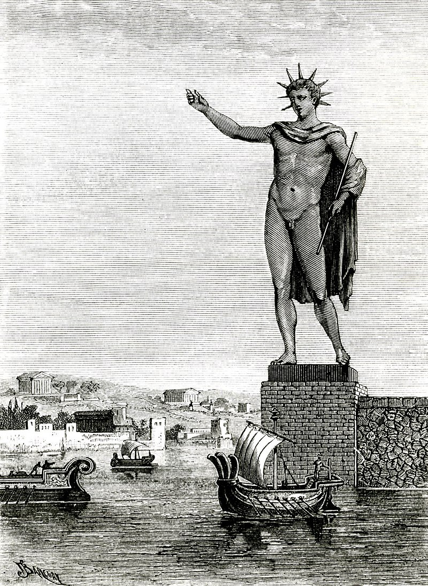

Коло́сс Родо́сский (др.-греч. Κολοσσὸς Ῥόδιος, лат. Colossus Rhodius) —
гигантская статуя древнегреческого бога Солнца — Гелиоса, которая стояла в портовом городе Родосе, расположенном
на одноимённом острове в Эгейском море, в Греции. Одно из «Семи чудес света». Произведение знаменитой родосской
школы скульптуры. Простоял чуть более полувека, пока не был разрушен землетрясением.
После распада державы Александра Македонского на Родосе закрепился Птолемей. После его утверждения в Египте он
заключил с Родосом союз, контролирующий торговлю в восточном Средиземноморье. В 305 году до н. э. сын диадоха
Антигона Одноглазого, Деметрий Македонский, высадился на Родосе с сорокатысячным войском. Продержав главный город
острова в осаде целый год, несмотря на сооружение множества осадных орудий, он был вынужден отступить. Около
294—282 годов до н. э. в честь героически выдержанной родосцами осады, жители города решили возвести статую[1].
Для этого граждане Родоса постановили продать брошенные врагом осадные орудия и на вырученные средства построить
статую почитаемого ими бога Солнца Гелиоса, чтобы отблагодарить его за заступничество. Гелиос был не просто особо
почитаемым божеством на острове — по легенде он был самим его создателем: не имея места, ему посвящённого,
солнечный бог вынес остров на своих руках из морской глубины.